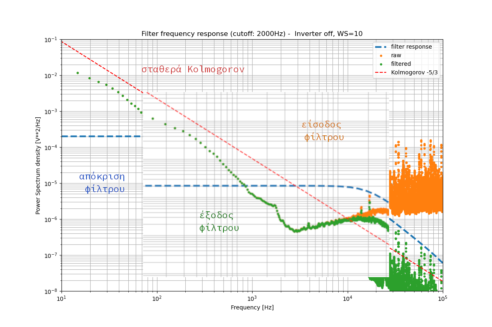

Φιλτρα συχνοτητων
Τ.Ε.Ι. Κρητης
Νικολας Τοροσιαν
2023-06-25 Κυρ 16:00
Καθηγητες
- Επιβλέπον καθηγητής
- Παπαδάκης Νικόλας
- Υπ. Εργαστηρίου Α.Π.Ε
- Κονταξάκης Κωv/νος
Τι ειναι σημα
- Συνεχές / Διακριτό
- Ημιτονοειδές / Παλμικό
- δυαδικό
- π.χ. ’καλημέρα’ == 11001110 10111010 11001110 10110001 11001110 10111011 11001110 10110111 11001110 10111100 11001110 10110101 11001111 10000001 11001110 10110001
- Να εμπεριέχει πληροφορία
- Δηλαδή διακριτές διαφορές στην ισχύ ή/και την συχνότητα
- Περιοδική συμπεριφορά
- Η επανάληψη στο χρόνο είναι από τα σημαντικότερα χαρακτηριστικά των σημάτων.
χρησεις
- Ως μέτρο αναφοράς και σε μετρητικές συσκευές
- Επικοινωνία-Διαδίκτυο
- Για συμπίεση πληροφορίας
συσκευες / επικοινωνια
Μετρητής ταλαντώσεων

Συσκεύη κουρδίσματος

Καλώδιο επικοινωνίας

συμπιεση / κωδικοποιηση
Με τις απαιτήσεις για ολοένα και περισσότερο όγκο πληροφορίας προς κωδικοποίηση και αποστολή σε συνεχώς μεγαλύτερες αποστάσεις, αναπτύσσονται βελτιστοποιήσεις αλλά και νέοι αλγόριθμοι για αυτό τον σκοπό. Η παρακάτω φράση παρουσιάζεται κωδικοποιημένη χρησιμοποιώντας τον Κώδικα (Σήματα) Morse. Αποτέλεσε την πρώτη μορφή επικοινωνίας εξ’ αποστάσεως με την χρήση συνεχόμενων καλωδίων.
Despite the fact that I analyzed nine problems correctly, no one congratulated me. But when I made one mistake, everyone started laughing. This means that even if a person is successful, society will notice his slightest mistake. And they’ll like that.
So don’t let criticism destroy your dreams. The only person who never makes a mistake is someone who does nothing. – Albert Einstein
-.././.../.--./../-/. -/..../. ..-./.-/-.-./- -/..../.-/- .. .-/-./.-/.-../-.--/--.././-.. -./../-./. .--./.-./---/-.../.-.././--/... -.-./---/.-./.-././-.-./-/.-../-.--/--..-- -./--- ---/-./. -.-./---/-./--./.-./.-/-/..-/.-../.-/-/./-.. --/./.-.-.- -.../..-/- .--/...././-. ..
--/.-/-../. ---/-./. --/../.../-/.-/-.-/./--..-- ./...-/./.-./-.--/---/-./. .../-/.-/.-./-/./-.. .-../.-/..-/--./..../../-./--./.-.-.- -/..../../... --/./.-/-./... -/..../.-/- ./...-/./-. ../..-. .- .--././.-./.../---/-. ../... .../..-/-.-./-.-././.../.../..-./..-/.-../--..--
.../---/-.-./.././-/-.-- .--/../.-../.-.. -./---/-/../-.-./. ..../../... .../.-../../--./..../-/./.../- --/../.../-/.-/-.-/./.-.-.- .-/-./-.. -/...././-.--/.----./.-../.-.. .-../../-.-/. -/..../.-/-/.-.-.-
.../--- -../---/-./.----./- .-.././- -.-./.-./../-/../-.-./../.../-- -.././.../-/.-./---/-.-- -.--/---/..-/.-. -../.-././.-/--/.../.-.-.- -/..../. ---/-./.-../-.-- .--././.-./.../---/-. .--/..../--- -././...-/./.-. --/.-/-.-/./... .- --/../.../-/.-/-.-/. ../...
.../---/--/./---/-./. .--/..../--- -../---/./... -./---/-/..../../-./--./.-.-.-
Εργαστηριακη εγκατασταση

αισθητηρες ανεμου


διαχειρηση δεδομενων
Εμφανίζεται θόρυβος μόλις ο μετασχηματιστής ενεργοποιείται. Παρακάτω συγκρίνονται τα σήματα για 0 και 10 m/s αριστερά και δεξιά. Φαίνεται ξεκάθαρα η επιρροή από την Η/Μ ακτινοβολία του μετασχηματιστή και μπορούμε να υποθέσουμε ότι επιδρά σε φάσμα υψηλών συχνοτήτων αφού η πλειοψηφία των δειγμάτων δεν αποκλίνει πολύ από την μέση τιμή του σήματος.


καταγραφη
Μετά την καταγραφή κάποιου σήματος και πριν την όποια επεξεργασία, συνηστάται να ελεγχθεί για τυχών αλλοίωση λόγω ανεπαρκούς συχνότητας καταγραφής και του θεωρήματος δειγματοληψίας Nyquist. Για τα σήματα που εξετάστηκαν, εφαρμόστηκαν διαφορετικές συχνότητες καταγραφής για μηδενική ταχύτητα ανέμου για να διαπιστωθεί ο βαθμός της αλλοίωσης που ενδέχεται να εμπεριέχει το αρχικό σήμα.

επεξεργασια
Εκτώς από την απόρριψη συχνοτήτων με φίλτρα, πραγματοποιήθηκε έλεγχος του σήματος για καταστρεπτικά φαινόμενα. Με την χρήση αποδεκατισμού, συμπεριλαμβανομένου και φίλτρου κατά της αλλοίωσης, λόγω μεταβολής της αρχικής συχνότητας του σήματος μπορούμε να διακρίνουμε με πορτοκαλί χρώμα το επεξεργασμένο σήμα και με πράσινο το καταγεγραμμένο αρχικά στην ίδια συχνότητα με το αποδεκατισμένο σήμα.

φιλτρα συχνοτητων

IIR
Φίλτρα άπειρης κρουστικής απόκρισης
Σε αντίθεση με τα FIR έχουν την δυνατότητα μεγάλης μείωσης της ισχύος των συχνοτήτων μετά την συχνότητα κατακρημνισμού (cut-off frequency), με ελάχιστη επιρροή των συχνοτήτων στο φάσμα διέλευσης. Η ακρίβειά τους οφείλεται στην μέθοδο της ανάδρασης, χρησιμοποιώντας την έξοδο του φίλτρου κατά την διαδικασία για την βελτιστοποίηση των χαρακτηριστικών του πριν την επόμενη εφαρμογή.

FIR
Φίλτρα πεπερασμένης κρουστικής απόκρισης
Έχουν την δυνατότητα απόρριψης συχνοτήτων που απέχουν κατά ένα ποσό από την συχνότητα αποκοπής του φίλτρου. Όπως θα παρατηρήσουμε και στο διάγραμμα δεξιά υπάρχει σημαντική καθυστέρηση από την επιλεγμένη συχνότητα και την απομείωση του φάσματος από αυτήν και μετά. Αυτό είναι χαρακτηριστικό των συστημάτων FIR καθώς δεν εφαρμόζουν την τεχνική της ανάδρασης.

συγκριση φιλτρων
Φίλτρα διέλευσης χαμηλών συχνοτήτων
IIR ☟
FIR ☟
διάφορες αποκρίσεις ☟


συμπερασματα
Εδώ καλό είναι να πω για την δυνατότητα των IIR για καλύτερη ανάλυση αλλά και μεγαλύτερο χρόνο εκτέλεσης για μεγάλα σετ δεδομένων.
- IIR
- Υπέρ
- ☑ ανάλυση σήματος εξόδου
- ☑ τάξη φίλτρου (2)
- Κατά
- ☑ Χρόνος εκτέλεσης
- ☑ καθυστέρηση στο σήμα εξόδου
- Υπέρ
- FIR
- Υπέρ
- ☑ Χρόνος εκτέλεσης
- ☑ ελαχιστοποίηση καθυστέρησης στο σήμα εξόδου
- Κατά
- ☑ ανάλυση σήματος εξόδου
- ☑ τάξη φίλτρου (22)
- Υπέρ
Συνδυασμός φίλτρων:
Πρώτα θα πρέπει να εφαρμόσουμε το FIR για τον καθαρισμό της πληθώρας του θορύβου με χαμηλή ανάλυση και έπειτα το IIR απομειώνοντας φάσματα θορύβου που αδυνατούμε με το FIR.
Ευχαριστω για τον χρονο σας
- IIR